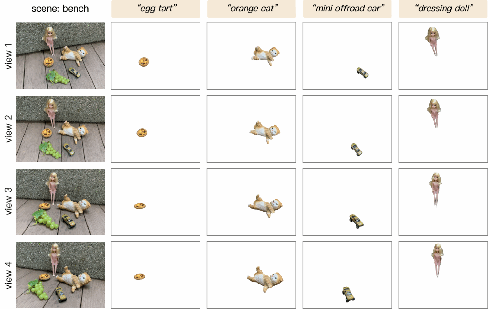
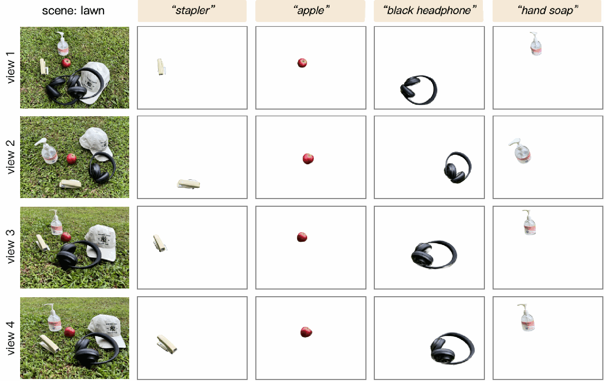
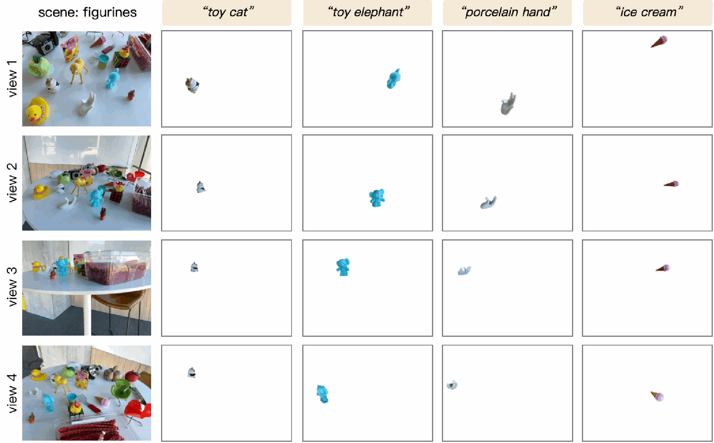
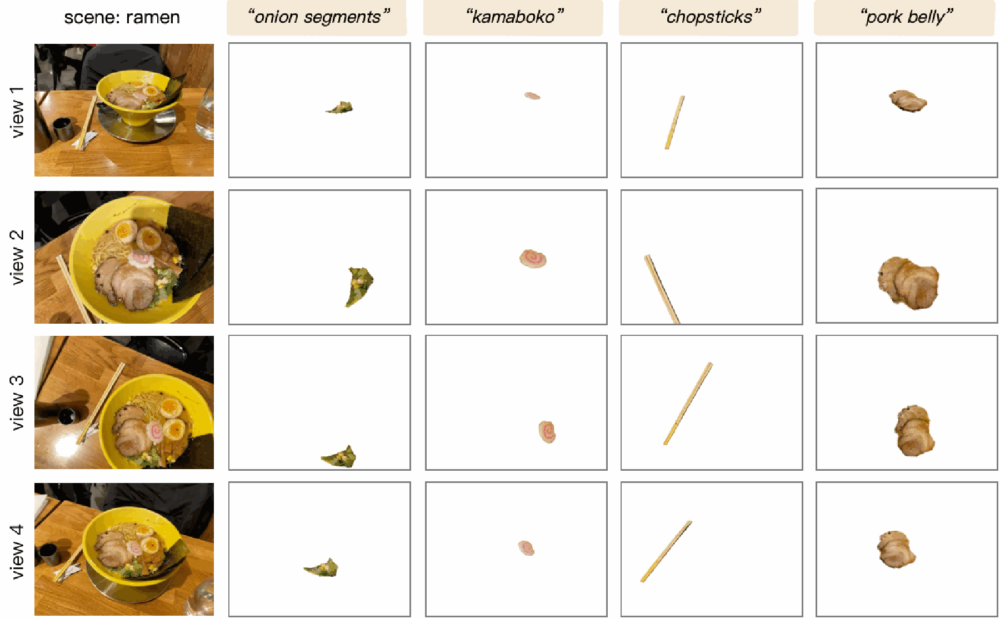

More segmentation results
Open-vocabulary segmentation across multiple views. Select a figure to view its original PDF.




Open-vocabulary segmentation across multiple views. Select a figure to view its original PDF.



